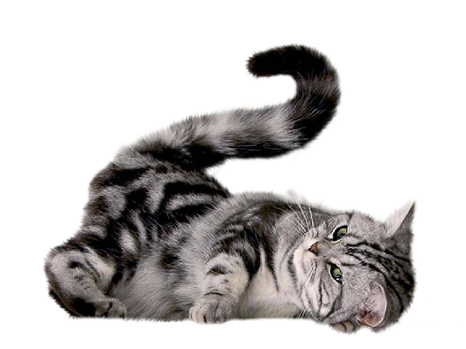
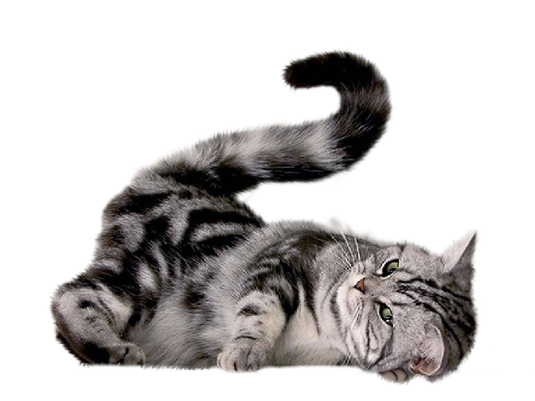

The Best Cat Food Recipes for our Feline Friends
Do you wish to prepare a fantastic meal for your cat? If so, this article is perfect for you!
 Is your cat tired of dry food? Has he ever given you this look?
Is your cat tired of dry food? Has he ever given you this look?
Here you can find five delicious recipes to spoil your pet with:
 
